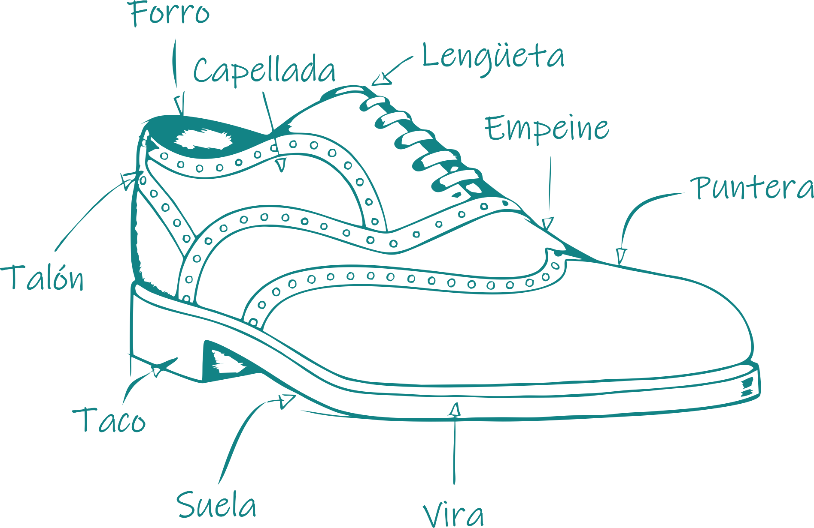

¿Qué es un zapato?
Como definición un zapato es un artículo destinado a proteger los pies. A nivel cultural se han utilizado como elemento decorativo y de moda. El diseño de los zapatos fue variando a lo largo del tiempo y de una cultura a otra, en sus comienzos la apariencia estuvo ligada a la función. Tradicionalmente los zapatos se han fabricado con cuero y madera pero a lo largo de los años se fue ampliando el uso de otros materiales.
